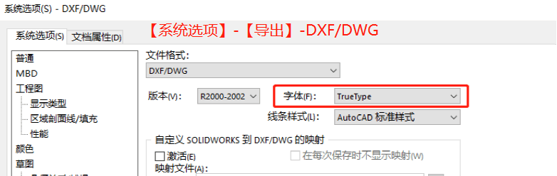
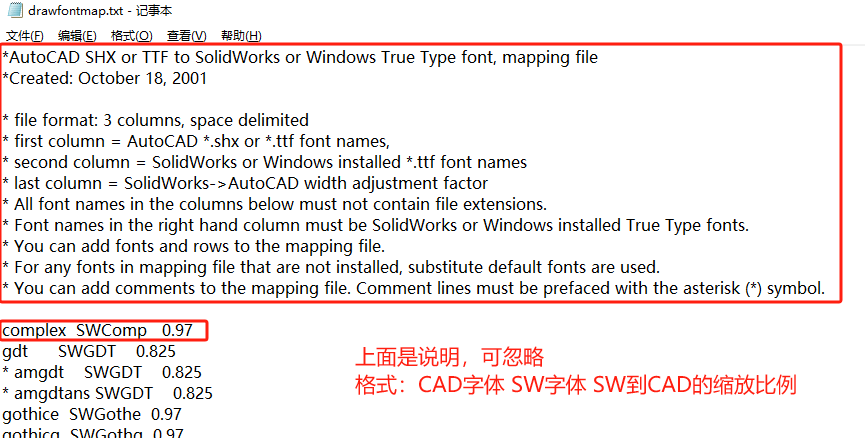
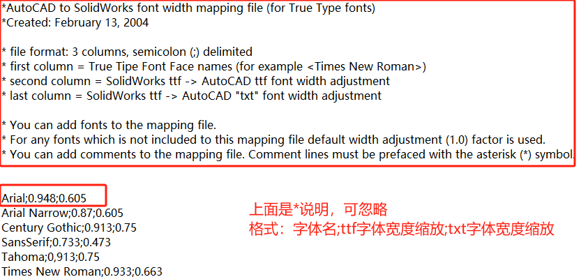
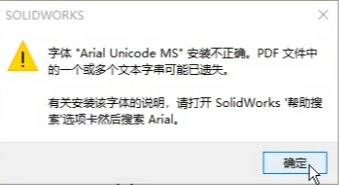
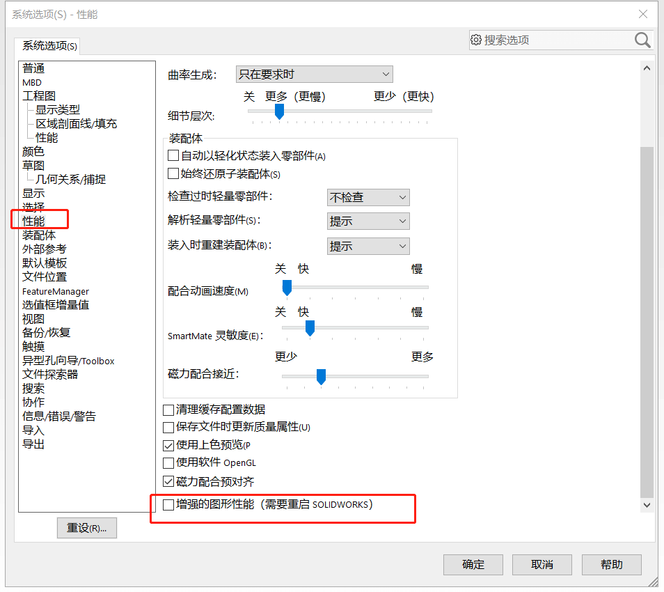
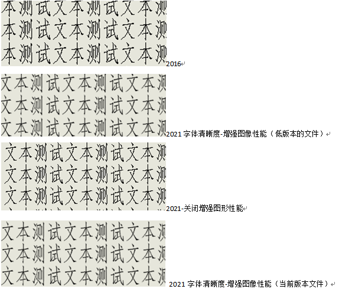

工程图字体问题
SW 工程图转其他图纸格式后，出现字体或尺寸大小不一致的问题
字体导出DWG问题
出现字体或大小不一致的问题
方法1：设置TrueType
【选项-系统选项-导出DXF/DWG】 的字体选项处选择【TrueType】，然后再工程图另存为*.dwg 格式即可。
3.回到导出界面，单击【保存】。打开检查图纸字体样式和大小。
方法2：drawfrontmap
找到 SOLIDWOKRS 安装目录下的“drawfrontmap.txt”文件，使用记事本程序打开。（一般是：C:\Program Files\SOLIDWORKS Corp\SOLIDWORKS\data\drawfrontmap.txt”)
1 | 使用方法：在文本末尾添加一行 |
保存drawfrontmap文件后。重新在 SOLIDWORKS 中另存为 DWG 格式，选择【选项】，选择【TrueType】，单击【保存】即可
方法3：待确认
此时可将SOLIDWORKS另存DWG，并选择truetype字体格式导出即可实现预期宽度调整。下面是关于ttfontratiomap的内容说明：
Ｑ：已知SPR1214251：[系统 Win10 20H2:TTF type Chinese font scale mapping is notworking when there is a setting in ttfontratiomap.txt。系统 Win10 20H2当ttfontratiomap.txt中有设置时，type Chinese字体比例映射不工作。
A：绕行办法:即将ttfontratiomap.txt文件备份到其它位置，添加要导出字体的调整比例如”汉仪长仿宋体;0.88”，再另存txt文件为ANSI编码格式。将ttfontratiomap.txt文件放回原位置，
字体导出PDF问题
使用Arial字体做PDF导出时，PDF文件出现乱码。
A1：Arial 在使用中文字体的兼容性比较差。可以安装Arial UNIcode或Arial UNIcode MS
通过网盘分享的文件：arial unicode ms.ttf
链接: https://pan.baidu.com/s/1MdTtYRP-EP7uFNBx33L7jg?pwd=3cw8 提取码: 3cw8
A2：可以尝试用打印方式，选择“Microsoft To PDF的打印机打印。
A3：在【系统选项-导出-PDF】默认设置是勾选“嵌入字体”选项的。如果出现乱码的问题，请检查该选项是否取消勾选了。

字体导出eDrawing问题
工程图常用中文字体注释用eDrawings打开时字体显示异常
A：确认字体兼容问题来处理。eDrawings一系列的常用中文字体问题已经由研发确认为是eDrawings API对非英文字符支持有限导致
工程图字体模糊
在低版本工程图转高版本文字显示模糊
方法：在【系统选项-性能】关闭增强图形性能即可，功能对抗锯齿有优化功能，字体的锐度被削弱导致模糊
这个个版本及打开关闭增强图形性能的测试结果：
